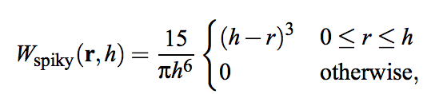

CS184 final project Milestone Report
Peijie Li, Sharon Li
3D fluids simulations and Snow Simulation
Summary
At this milestone, we have successfully implemented the simulation of simple 3D fluid. Our method is based on the Smooth Particles Hydrodynamics (SPH) to simulate fluids with free surface. To this end, we derive the viscosity and pressure force fields directly from the Navier-Stokes equation, and have tried a few smoothing kernel function to better simulate the interaction between pair of particles.
Overview of Program Structure
Our current implementation iterates through all particles, computes total force acting on each particle, and applies the verlet integration to update the velocity and position of each particle.
for each simulation step do:
for each particle do:
find neighbor particles that are closed enough it
store the list of neighbor particles
for each particle do:
compute density and pressure of the particle
computation will use the neight particles list
for each particle do:
based on the newly computed density and pressure
compute the pressure force computation
compute the viscosity force computation
compute other force (gravity)
sum over all forces acting on the particle
for each particle do:
verlet time integration to udpate velocity and position
What we have achieved
At this milstone, we are able to simulate simple fluid movement using particle-based system. The use of particles simplies a stationary grid-based system, as we assume each particle has constant mass and thus guarantee mass conservation. It further simplifies the Navier-Stokes equations, eliminating some complex terms such as the convective term "v*∇v". Thus, using the particle based system, there are only three terms left for the Navier-Stokes equations: force = -∇p+ρg+µ∇2
At the beginning of each simulation iteration, we first found the neighboring particles and then use them to calculate particle's density and pressure. Particle's density is evaluated through the following equation:

We then use the density to calcuate pressure acting on each particles. We find the Tait equation fit to use here:

We hen use the density and pressure value to further compute the pressure force and viscocity force acting on each particle. The equations we use are given below, where vi is the velocity of particle i.

We have tried a few W[eight] function to apply in the above equations. For the sake of stability, we decide to use Debrun's spiky kernel function, in favor of the cubic spline kernel function, which tends to bluid particles into clusters under high pressure. The equation for Spiky kernal function is given below:

Lastly, we sum over all the forces, including the gravity force, and use verlet integration to compute the new position and velocity for each particle
Short videos of our fluid simulation progress summary
Water falling onto an infinite plane at y = -1.5
Water falling into a box.
Presentation slides
Click here to check the slides.